Дизайн-дослідження · 10 вересня 2026
П'ятнадцять конкурентів, п'ять еталонів довіри поза категорією, вісім патернів взаємодії та вісім гіпотез — і чесний перелік того, чого ми досі не знаємо.
Продукт
У кожній родині є шухляда з ліками, у якій розбирається лише одна людина. Інструкції губляться, ніхто не пам'ятає, для чого була та напівпорожня упаковка, — а той, хто пам'ятає, не завжди стоїть біля аптечки.
Знайти те, що в нас є, зрозуміти, для чого воно — нашими власними словами, — і чи це досі правда. Усе міряємо цим реченням. Внесення має бути дешевим, інакше знання ніколи не потрапить усередину; а записи мають помітно старіти, інакше знання тихо перестає бути знанням.
Пари й невеликі домогосподарства зі спільною аптечкою, а також ті, хто живе сам. Три ознаки аудиторії: низька обізнаність у ліках — вони знають «біла коробочка від голови», а не «ібупрофен 400 мг»; аптека неблизько — поповнення запасів це запланована поїздка; спільна відповідальність за нерівних знань — одна людина купує й пам'ятає, а діяти доводиться всім.
Застосунок ніколи не каже, що приймати. Він показує, що є в родини, що родина сама про це написала, і механічні факти — дати, кількості, збіги діючих речовин. Ніяких діагнозів, рекомендацій чи розрахунку дози. Ця межа тримає продукт чесним і поза регуляторною зоною медичних виробів, і саме вона формує всі подальші рішення.
Жоден застосунок не був встановлений, жодні ліки не були внесені, нічого не заміряно. Усі дані про конкурентів — це маркетинг вендорів, сторінки в сторах, метадані магазинів і чужі відгуки.
Досліджень із користувачами не проводилось узагалі — жодного інтерв'ю, опитування чи спостереження. Кожне твердження про наших користувачів — це гіпотеза, успадкована з брифу, а не результат дослідження. Розділ 4 так із ними й поводиться і позначає ті, під якими немає жодних доказів.
Розділ 1
П'ятнадцять продуктів у трьох групах — прямі конкуренти, продукти, що виконують частину того самого завдання, і міжнародні еталони. Порівняно за аудиторією, основою продукту, ключовим механізмом, тим, що додає або відбирає довіру, і тим, хто платить.
Сама по собі знахідка: кіпрського чи грецького застосунку для домашньої аптечки не існує. Наші прямі конкуренти — міжнародні застосунки, доступні з кіпрського сторе, і жоден із них не знає нічого про місцеві торгові назви, години роботи аптек чи середземноморське літо.
| Продукт | Аудиторія | Основа | Ключовий механізм | Довіра | Гроші |
|---|---|---|---|---|---|
| MyAidKit | Родини, кілька аптечок | Без реєстру | Аптечки, сповіщення про термін придатності за 7/30/90 днів, пошук за симптомом, спільний доступ через iCloud | Розробник-одинак. Оцінок замало, щоб показати середню; у картці остання оновка — серпень 2025 | $2,99/міс · $24,99/рік |
| Home Med Cabinet | Доглядальники — «У бабусі шість. У тата три.» | Каталог штрихкодів + ШІ-тексти з баз ES/FR/CH | За людиною і за місцем зберігання; OCR; розпізнавання фото рецептів | Активно розвивається. Видає згенеровані ШІ тексти про побічні дії та взаємодії | £3,99/міс · £24,99/рік |
| HomeMed | Приватний особистий список | Нічого — без акаунтів і без хмари | Фото, термін придатності, кількість, місце зберігання, теги симптомів | Декларує «Дані не збираються» у Play, показуючи при цьому рекламу; у App Store вказано Device ID для сторонньої реклами | Безкоштовно, з рекламою |
| BEEP | Спершу роздріб, потім дім | Універсальний каталог штрихкодів, без фармданих | Сканувати штрихкод → вписати дату руками → нагадування | 500 тис.+ встановлень, 1,9 із 1 910 оцінок | Безкоштовно ≤50 · $4,90/команда/міс |
| Medkit | Незрозуміло | Не вказано | Кілька аптечок, залишки, перевірка взаємодій | 3,4 із 18 оцінок; в описі — «інструменти для медичних центрів» | Безкоштовно |
| Продукт | Аудиторія | Основа | Ключовий механізм | Довіра | Гроші |
|---|---|---|---|---|---|
| Apple Health | Кожен, хто має iPhone | Платформа + база ліків США | Додавання камерою (лише США), розклад, відмітка «прийнято/пропущено» | «Не має використовуватись як заміна професійного медичного судження». Немає ні терміну придатності, ні кількості | Немає |
| Medisafe | Фармкомпанії | 13 млн+ пацієнтів, 25+ фармпартнерів | Нагадування та програми прихильності до терапії | На головній продає «двигун залучення пацієнтів для фармпортфелів» і «до 50-кратного ROI» | B2B, фарма |
| MyTherapy | Пацієнти з хронічними станами | smartpatient gmbh | Нагадування, фіксація прийомів, щоденник | «Завжди безкоштовно… ми співпрацюємо з партнерами, зокрема з фармацевтичними компаніями» | Фармпартнерства |
| Sortly | Бізнеси — 20 000+ | Загальний інвентарний рушій + QR-етикетки | Картки з фото, власні поля, згенеровані етикетки | Бізнес-SaaS без медичних зобов'язань | Безкоштовно (100 позицій) → $149/міс |
| Кіпрські аптечні застосунки | Усі на Кіпрі, кому аптека потрібна зараз | Довідник аптек Міністерства охорони здоров'я | Місто або GPS, чергові аптеки в реальному часі, пуш при зміні графіка | Офіційне джерело; грецька, англійська і російська | Банерна реклама безрецептурних брендів |
| Продукт | Аудиторія | Основа | Ключовий механізм | Довіра | Гроші |
|---|---|---|---|---|---|
| mojApteczka | Родини, літні люди, доглядальники, роботодавці | Польський реєстр (URPL), 78 000 продуктів, оновлення щодня | ШІ-скан → збіг у реєстрі → автозаповнення; пошук за показанням; педіатрична класифікація; QR-код для фармацевта | На сайті пишуть, що не діляться даними; у декларації Play — чотири типи даних, переданих третім сторонам, і збір «Health info». 100+ встановлень у Play, без оцінок | Безкоштовно (20 ліків) → 19,99 PLN (90) |
| Apteczka Domowa | Польські домогосподарства | Той самий реєстр МОЗ | Фото/штрихкод/вручну, нагадування в календарі, офіційні інструкції | «Розробник не збирає жодних даних»; 3,4 із 87 оцінок | Немає — коштом великої компанії |
| Bring! | Домогосподарства, сусіди — 20 млн користувачів | Мережа спільних списків + ритейлери | Один дотик по плитці, щоб додати; синхронізація в реальному часі | Довіра через масштаб; без медичних зобов'язань | Ритейлери й реклама |
| Червоний Хрест | Будь-хто; батьки | Інституційна програма першої допомоги | 20+ навичок, покрокові інструкції, відео, офлайн | На сторінці немає дисклеймера «не замінює професійну допомогу»; тон заспокійливий | Благодійність |
| NHS App | Англія, 13+, з реєстрацією в лікаря | Національні медичні записи | Рецепти, записи, візити | Державний сервіс; опублікована заява про доступність | Кошти платників податків |
Попередня версія цього дослідження стверджувала протилежне. Дані магазинів спростували її в обидва боки: BEEP не має жодних фармданих і має 500 тис.+ встановлень; mojApteczka має польський національний реєстр і 100+ встановлень без жодної оцінки на Android. Реєстр дає автозаповнення й довіру — але не дистрибуцію й не утримання.
Medisafe і MyTherapy оплачує фарма. Bring! — ритейлери. Кіпрські аптечні застосунки — банер безрецептурного бренду просто над списком чергових аптек. Червоний Хрест — донори, NHS — платники податків, Apteczka Domowa — добра воля корпорації. Єдині, хто бере гроші напряму з користувача, — застосунки розробників-одинаків за £25–30 на рік, і в жодного з них немає аудиторії.
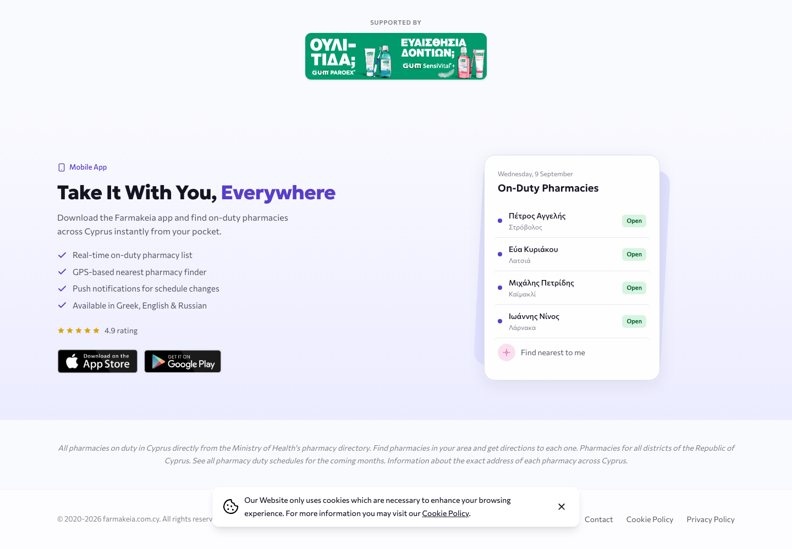
Штрихкоди не містять дати придатності. BEEP каже це прямо: скануй штрихкод, а потім вписуй дату. Кожен продукт тут — з реєстром чи без — просить людину зробити це вручну. І це найбільше джерело злості в категорії. Приблизно половина зафіксованих однозіркових відгуків BEEP — від людей, які очікували, що сканер прочитає дату: «забагато друкування… не 2 хвилини на позицію» (1★, 22 груд. 2025).
Урок не в тому, щоб не просити дату. А в тому, щоб ніколи не натякати, що не попросиш.
Home Med Cabinet у власних скриншотах для стору використовує лізиноприл, метформін і аторвастатин під заголовком «У бабусі шість. У тата три. У тебе — один застосунок». Це ведення хронічних рецептів для літнього родича. Кожен конкурент припускає, що користувач уже знає назви своїх ліків.
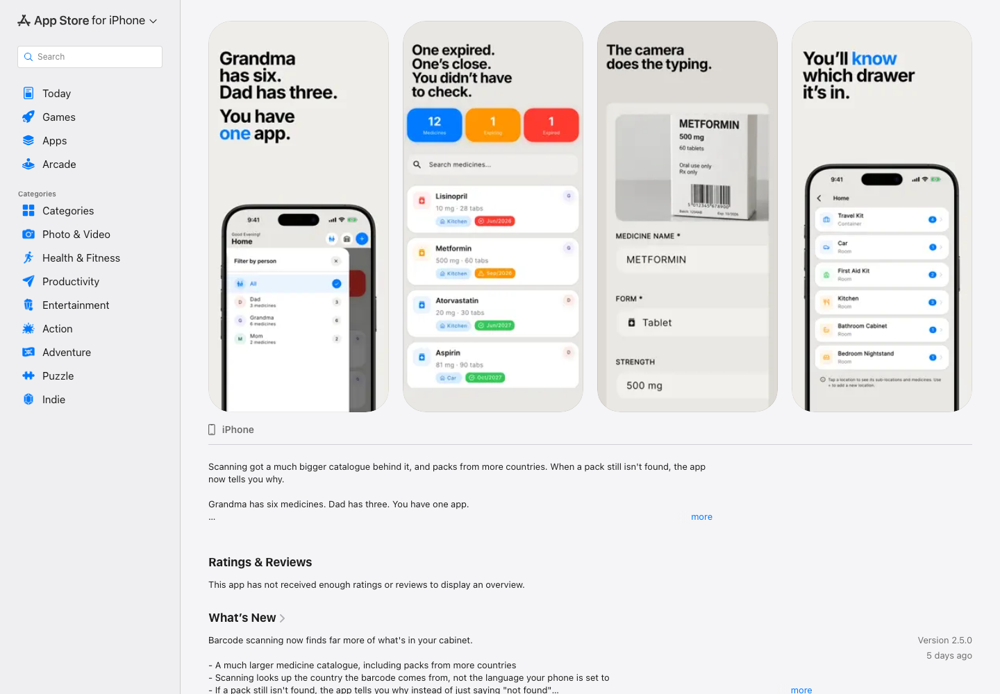
У mojApteczka «Нотатки» — одна картка з дванадцяти, в кінці сітки функцій. Скрізь інде власні слова родини — виноска до офіційної інструкції. Для нас вони основний опис, а авторитет — необов'язковий. Наразі це найясніше, що ми маємо.
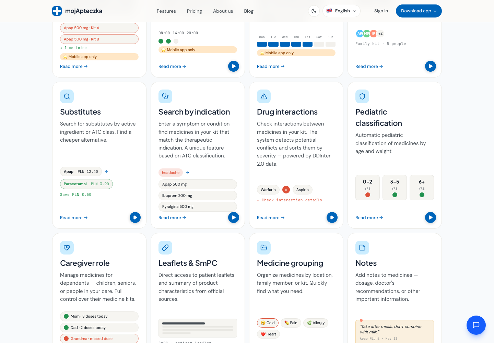
Home Med Cabinet моделює кухню, авто й дорожню аптечку; mojApteczka групує за місцем. Обидва використовують це, щоб знайти річ. Жоден зі знайдених конкурентів не пов'язує місце з температурою — а ліки в авто на Кіпрі в серпні це вже інший об'єкт, ніж ті самі ліки в кухонній шухляді.
Що спека справді є проблемою в кіпрських домівках. Бриф це стверджує; жодних вимірювань, документів із рекомендаціями чи свідчень користувачів не зібрано. Див. гіпотезу H6.
Ніхто не пропонує спільний доступ для родини з чистою декларацією про дані. Ті, хто дає спільний доступ — mojApteczka, Medisafe, MyTherapy, — декларують передачу даних третім сторонам, бо їх фінансує реклама або фарма. Ті, у кого декларація чиста, працюють лише локально, і їхні відгуки повні людей, які втратили все разом із мертвим телефоном. Спільний і чистий — порожня позиція.
Розділ 2
Параметр, який ми вимірюємо, — успадкована довіра: чи може друга людина покластися на те, що записала перша, не перевіряючи, і зрозуміти, коли покладатися вже не варто? П'ять еталонів, жоден із них не медичний, оцінені від 1 до 5 за вісьмома критеріями.
Оцінки — це судження на основі публічної документації, а не вимірювання чи особистий досвід використання.
| Критерій | Waze | Medical ID | 1Password | Wikipedia | Nest |
|---|---|---|---|---|---|
| Живе без свого автора | 5 | 5 | 4 | 5 | 5 |
| Походження видно одразу | 4 | 2 | 4 | 5 | 2 |
| Видиме старіння | 5 | 1 | 3 | 3 | 4 |
| Дешеве виправлення | 5 | 2 | 3 | 4 | 2 |
| Калібрована впевненість | 3 | 2 | 3 | 5 | 5 |
| Стриманість + доказ, що працює | 3 | 3 | 4 | 4 | 5 |
| Доступність у найгіршу мить | 3 | 5 | 2 | 4 | 5 |
| Чесна передача людині | 2 | 5 | 2 | 1 | 3 |
| Разом / 40 | 30 | 25 | 25 | 31 | 31 |
Ніхто не перетнув 31 із 40, і жоден продукт не сильний більш ніж у п'яти критеріях із восьми: еталона, який можна скопіювати, немає — його доведеться зібрати. Найгостріший урок — найнижча оцінка в таблиці: Apple Medical ID найкращий тут у тому, щоб жити без свого автора, і найгірший у тому, щоб знати, що він застарів. Написаний у 2019-му, він подає себе рівно з тією ж упевненістю сьогодні. Саме за крок від цієї помилки стоїть і наш продукт.
Повідомлення у Waze несе свій вік, водії, що проїжджають повз, підтверджують або знімають його одним дотиком, а зняття скорочує йому життя. Як застосувати: щоразу, коли ліки з'являються на очі — відкриті, знайдені або в місячному дайджесті, — один дотик відповідає на питання чи це досі в шухляді? Кожен дотик оновлює позначку часу; запис, який ніхто не підтверджував рік, так про себе й каже, замість вдавати.
Це б'є точно в ту поломку, яку описують чужі користувачі: «Я додав нові упаковки, але у зведенні досі ті ліки, які я додав раніше і яких більше не вживаю.» (1★, 23 груд. 2025, переклад.)
Heads-Up — це промовлене раннє попередження; сигнал тривоги — зовсім інший регістр для критичних рівнів. Пристрій робить самоперевірку кожні 200 секунд, щомісячну перевірку звуку власного динаміка й сирени і світиться зеленим, коли ви гасите світло, — щоб тиша була доказом, а не відсутністю. Як застосувати: чотирирівнева шкала серйозності плюс місячний дайджест, який каже перевірено, від вас нічого не потрібно навіть тоді, коли повідомляти нема про що.
Алергії, стани та контакти для екстрених випадків читаються з екрана блокування без пароля — парамедиком, який ніколи вас не бачив. Як застосувати: екстрений перегляд аптечки, доступний без акаунта родини. Це і є формулювання завдання, перекладене в механіку, — і жоден зі знайдених конкурентів цього не має.
Беремо модель доступу і свідомо не беремо модель старіння — Medical ID має 1 бал за видиме старіння.
Waze і Wikipedia заслуговують довіри тому, що на одне й те саме твердження дивиться багато незалежних незнайомців. Механізм вимагає натовпу. Родина — це двоє-четверо людей: ніхто не переголосує хибний запис, репутаційний бал не несе сигналу, а той, хто вніс запис, — той самий, хто його підтверджуватиме. Один рецензент формулює нашу проблему за нас: «база ліків, яку тримає лише одна людина в домі, не має сенсу» (1★, 22 лист. 2025).
Беремо жест, відмовляємось від епістемології. Свіжість має походити від об'єкта — надрукованої дати, часу, що минув, журналу прийомів, — а не від консенсусу.
Розділ 3
Вісім патернів взаємодії для ключового завдання, розділені за тим, звідки починається пошук, — щоб це були справді різні механіки, а не варіації однієї.
| Патерн | Пошук починається з | Вердикт |
|---|---|---|
| Реєстр | Слова, що вже є в записі | Підводить саме того користувача, для якого ми проєктуємо: вимагає лексики, якої в нього немає, а порожній результат не відрізнити від «у нас такого немає» |
| Спершу потреба | Симптому | Обрано — див. нижче |
| Дзеркало простору | Місця | Сильний другий варіант. Найдорожчий в утриманні: карта тихо бреше, щойно хтось переклав коробку |
| Спершу об'єкт | Фізичної упаковки | Заблоковано на нашому ринку — у кіпрському реєстрі немає поля штрихкоду, тож зіставляти скан нема з чим |
| Спершу наліпка | Об'єкта, поза екраном | Вимагає ритуалу, якого більшість родин не виконає; наліпка переживає запис |
| Епізодичний | Спогаду про подію | Потребує місяців історії; епізодична пам'ять відмовляє першою о 2-й ночі |
| Статична сторінка | Нічого — ти просто читаєш | Правильний для екстреного доступу (M3), ламається після ~10 позицій |
| Розмовний | Речення | Відхилено повністю — див. нижче |
Верхній рівень — це не ліки, а причини: горло, температура, алергія, порізи, шлунок. Тиснеш одну — бачиш те, що є в родини й позначене нею, її ж власними словами.
1. Аудиторію визначає низька обізнаність у ліках. Вони знають «біла коробочка від голови», а не «цетиризин». Поле пошуку вимагає лексики, якої, за брифом, у них немає; список причин не вимагає жодної.
2. Завдання — це питання, а не пошук за назвою. Користувач приходить із симптомом, а не з назвою продукту. «Спершу потреба» — єдиний патерн, чиї вхідні двері збігаються з тим, як проблема справді виникає.
3. Він робить власні слова родини корисними для неї самої. Нотатки й теги стають покажчиком, тож написана нотатка одразу дає видимий результат. Усі інші патерни ставляться до нотаток як до прикраси — і саме застарілі дані вбивають продукти в цій категорії.
Що може піти не так: це може читатися як порада. Порядок означає ранжування; порожня категорія означає «це нічим не лікується». Обидва випадки треба вирішувати формулюваннями, а формулювання — це і є поверхня безпеки.
Не «поки що ні», а з трьох незалежних причин. Він переходить межу, яку ми не переходимо: речення у відповідь на «що в нас є від горла» — це рекомендація, хоч як її пом'якшуй. Він ламає офлайн, а єдина мить, заради якої ми існуємо, — це мить без зв'язку. І його неможливо відкалібрувати: плавне речення за побудовою максимально впевнене, тоді як уся наша модель довіри — ніколи не стверджувати більше, ніж ми знаємо.
Home Med Cabinet уже видає згенеровані ШІ тексти про побічні дії та взаємодії, написані розробником-одинаком без жодної згаданої медичної перевірки. Ось ця дорога, і вона на видноті.
Розділ 4
Кожна прогалина стає гіпотезою, яку можна спростувати, із зазначенням розділу, на який вона спирається, доказів «за» і «проти» та способу перевірки. Там, де доказів немає взагалі, так і написано.
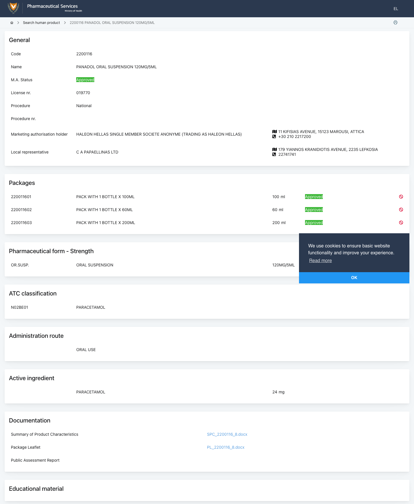
Обидві відповіді можна отримати без користувачів: одну — з температурних даних і рекомендацій щодо зберігання, другу — рішенням про гроші.
Встановити п'ять еталонних застосунків, додати в кожен справжні ліки, заміряти час. Жоден браузер цього не замінить.
Ніщо в цьому документі не замінює розмову з п'ятьма родинами. Доки її немає, розділ брифу про аудиторію — це добре аргументована здогадка.
Додаток
69 знімків — маркетингові сайти, галереї App Store, сторінки Play із деклараціями Data Safety і кіпрський реєстр, перевірений вручну. Поверхні за логіном описані, а не зняті: вебзастосунки Sortly і Bring!, внутрішні екрани mojApteczka, Apple Health (лише на пристрої) та NHS App — усі вимагають акаунтів.
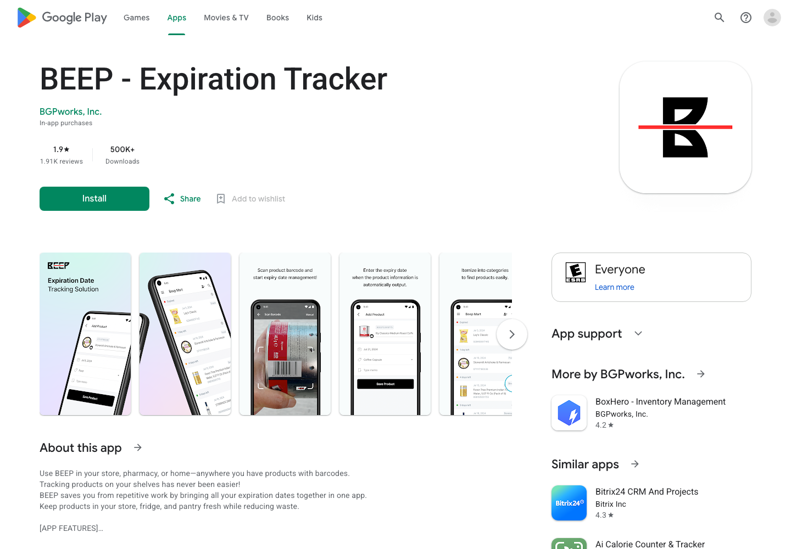
BEEP — 500 тис.+ встановлень, 1,9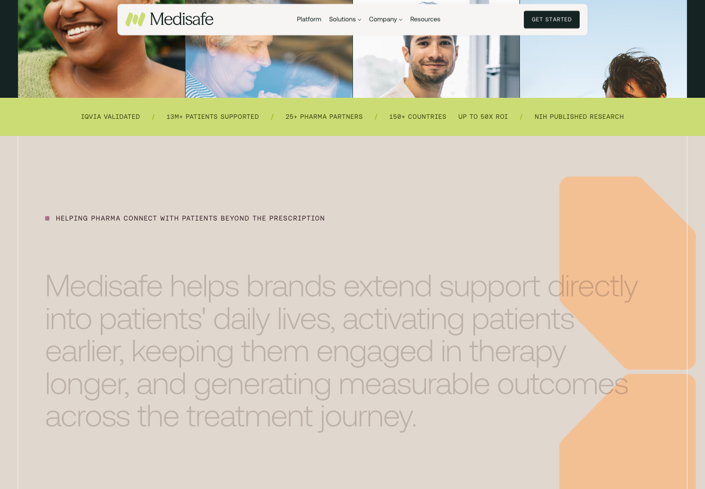
Medisafe — «до 50× ROI» для фарми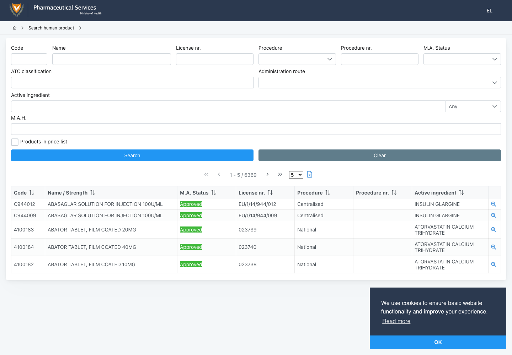
Кіпрський реєстр — 6 369 продуктів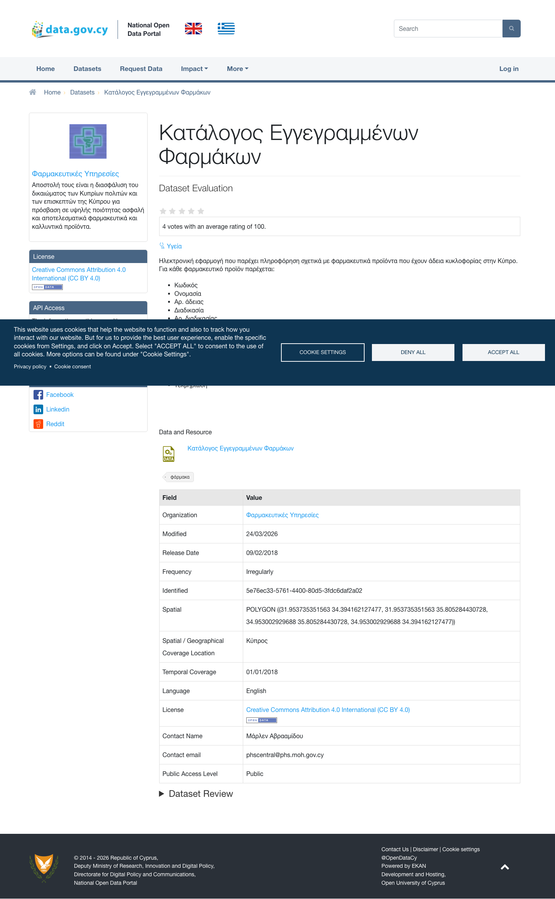
data.gov.cy — ліцензія CC BY 4.0 farmakeia.com.cy — банер реклами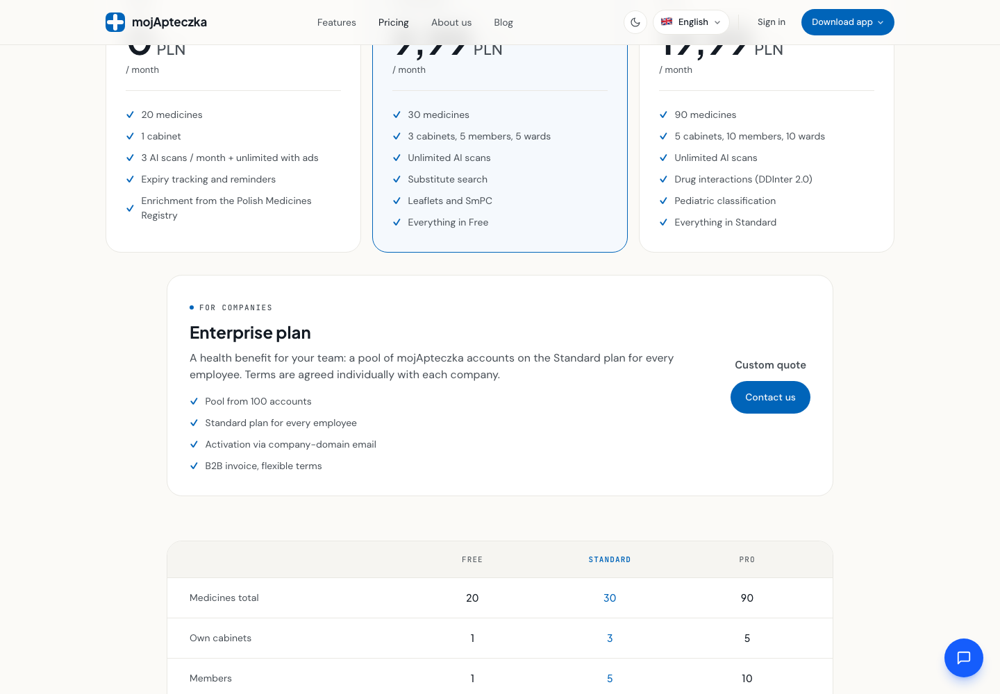
mojApteczka — тарифи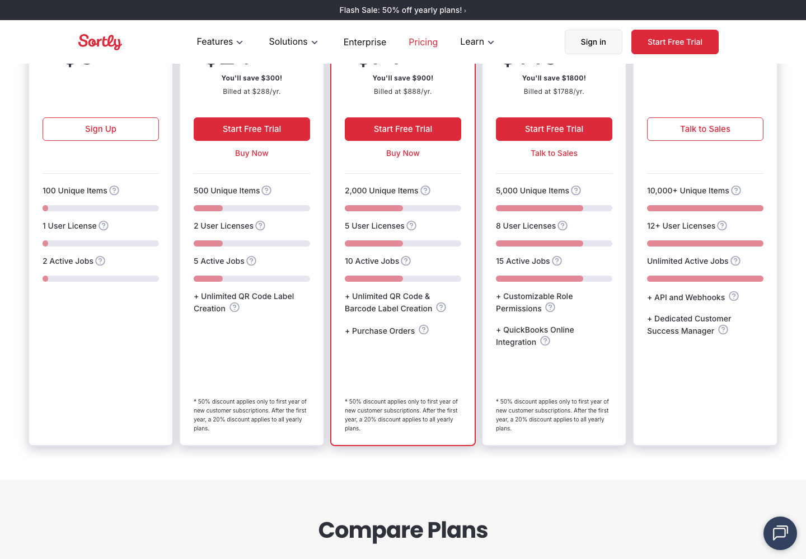
Sortly — бізнес-тарифи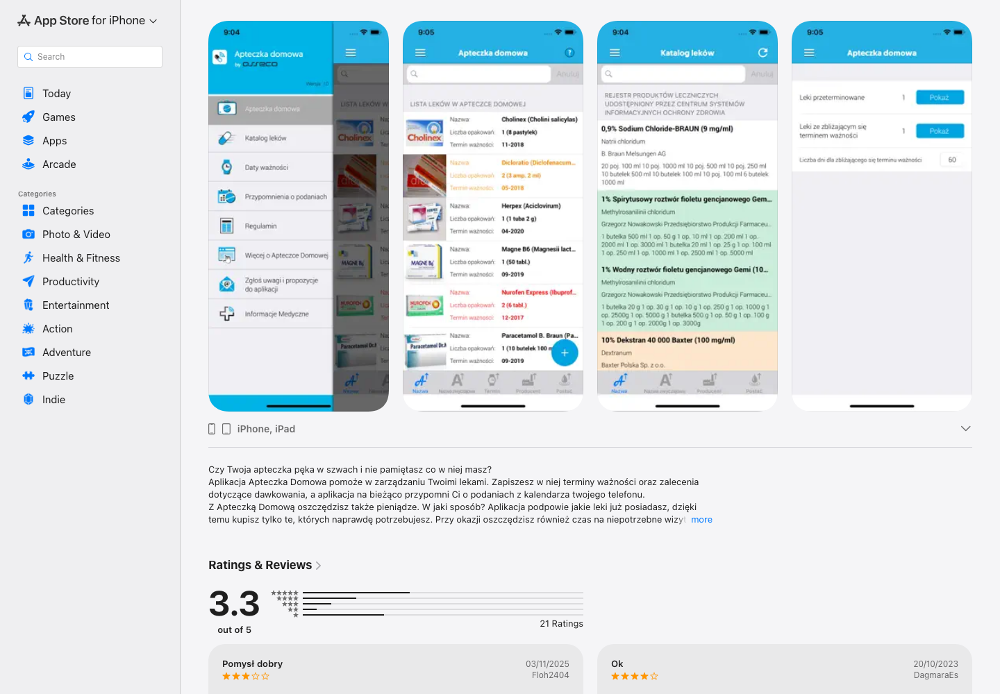
Apteczka Domowa — галерея в сторі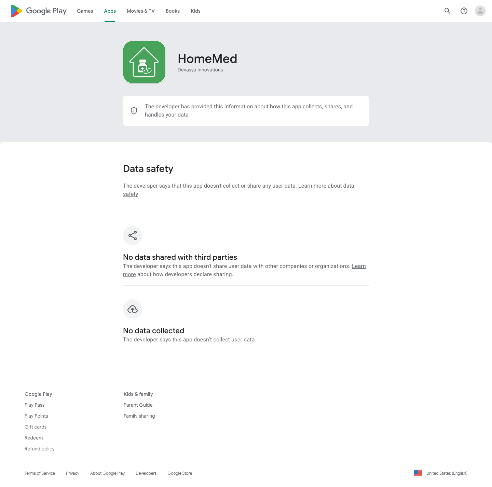
HomeMed — Data Safety у Play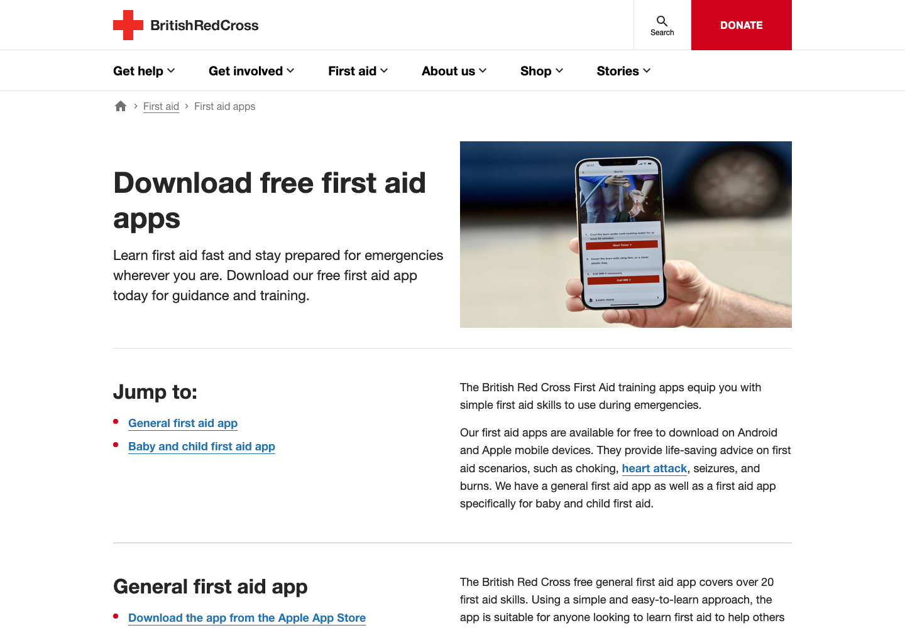
Червоний Хрест — перша допомога{kind=link}
{kind=link}
{kind=link}
{kind=link}
{kind=link}
{kind=link}
{kind=link}
{kind=link}
{kind=link}
{kind=link}
{kind=link}
{kind=link}